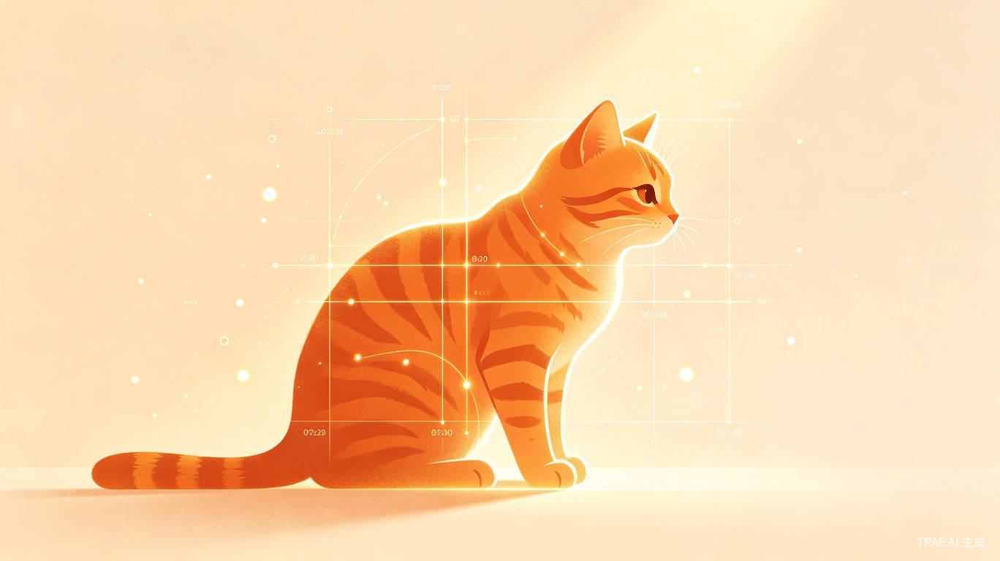
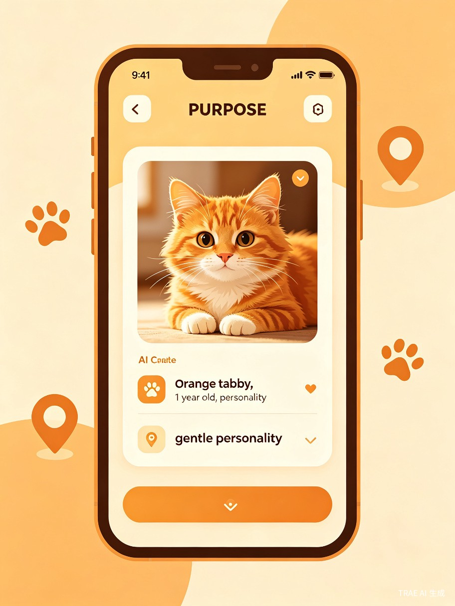
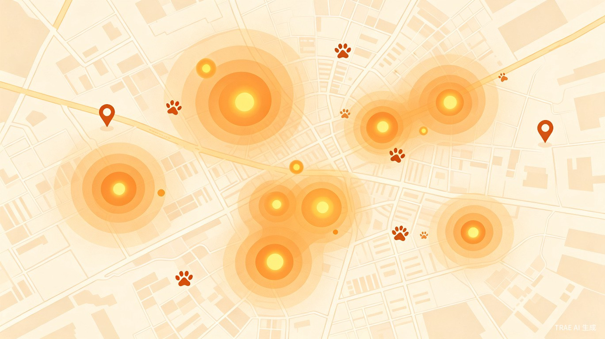

用 AI 为城市里无法为自己发声的流浪动物建立数字身份，让它们被看见、被保护、被温柔匹配
有一次，同事告诉我公园里有一只受伤的流浪猫需要帮助。我去了三次，带了些罐头，却始终没能找到它。街边有其他健康的流浪猫，但那只真正需要被看见的，一直藏在信息盲区里。而在更大的范围内，全国流浪猫狗总量庞大，但官方统计口径不一，学界和公益组织对这一数字的估算存在较大分歧。可以确定的是，它们中的绝大多数没有名字、没有档案、没有故事——在信息世界里，它们是彻底隐形的。
市民发现流浪动物后不知如何联系专业救助，信息依赖微信群/朋友圈，碎片化且易被淹没，错过最佳救治时机。
救助站"资金少、场地紧、人手缺"，但社会爱心资源无法高效汇集和精准分配，小型救助站被网红机构虹吸。
手工记录效率低、易出错，领养人无法获取完整信息，导致领养退回率高，形成"救助—滞留—消耗"恶性循环。
公众认知停留在"投喂即可"，想参与却找不到正规可信渠道，"爱心外包"现象普遍，善意成本转嫁救助者。
问题的核心早已不是"要不要救"，而是"如何可持续地救"。善意不应成为负担，更不该以自我毁灭为代价。
不是替代人的善意，而是让善意从"盲目"走向"精准"，从"脆弱"走向"安全"。

| 问题 | 功能 | 解决方式 |
|---|---|---|
| 市民发现流浪动物后不知如何联系专业救助，信息碎片化 | AI 动物档案 | 上传照片，AI 自动识别品种、估算年龄、分析性格标签，生成"动物身份证"。每一只被看见的生命，都有自己的数字身份 |
| 领养人与待领养动物双向盲选，领养退回率高 | 智能匹配引擎 | 基于动物需求与领养人条件的双向匹配，给出匹配度评分和推荐理由。让适合的人，遇见需要家的生命 |
| 救助信息不透明，公众无法获取完整档案，"爱心外包"普遍 | 分级安全保护 | 三级信息分级 + 身份选择机制。精确位置仅对认证救助人员可见，公众可以看到社区级信息并参与关注 |
| 公众想参与救助却找不到正规渠道，善意无法流动 | 社区关注网络 | 市民可在地图上标记观察到的流浪动物（社区级模糊定位），形成城市级关注热力图。每个标记都会关联到该动物的"关注动态" |
Demo 阶段聚焦核心体验链路，让用户在 3 分钟内完整感受"发现—建档—关注—匹配"的闭环。

| 页面 | 核心功能 | 对应叙事线 |
|---|---|---|
| 发现页 | 拍照上传入口 + 城市热力图 | 被看见：暗示上传后将由 AI 识别并生成档案 |
| AI 档案页 | 展示识别结果与动物身份证 | 被看见：核心页面，展示 AI 识别和档案生成 |
| 地图关注页 | 社区级热力图 + "标记我看到了它" | 被保护：社区级模糊定位，营造城市关注网络 |
| 关注动态页 | 动物被关注的时间线故事 | 被保护：展示社区标记记录，公众可参与的关注动态 |
| 领养匹配页 | 待领养动物 + 匹配评估 | 被匹配：AI 档案 + 匹配算法，双向对接 |
| 功能 | 覆盖页面 |
|---|---|
| AI 动物档案 | 发现页、AI 档案页 |
| 社区关注网络 | 地图关注页、关注动态页 |
| 分级安全保护 | AI 档案页（身份选择）、地图关注页（隐私保护）、领养匹配页（资质审核） |
| 智能匹配引擎 | 领养匹配页 |
"被看见"不能以"被暴露"为代价。我们选择"分级可见"而非"完全公开"或"完全封闭"——完全公开会将弱势生命置于风险中，完全封闭则让善意无法流动。分级是在开放与保护之间取得平衡。
| 信息项 | L1 公众 | L2 认证志愿者 | L3 认证救助人员 |
|---|---|---|---|
| 动物照片 | 可见 | 可见 | 可见 |
| 品种、性格标签 | 可见 | 可见 | 可见 |
| 所在社区（模糊） | 可见 | 可见 | 可见 |
| 关注动态时间线 | 可见 | 可见 | 可见 |
| 健康详情 | 不可见 | 可见 | 可见 |
| 疫苗/绝育记录 | 不可见 | 可见 | 可见 |
| 大致位置区域 | 不可见 | 可见 | 可见 |
| 救助进展详情 | 概要 | 完整 | 完整 |
| 精确位置 | 不可见 | 不可见 | 可见 |
| 联系方式 | 不可见 | 不可见 | 可见 |
| 完整医疗档案 | 不可见 | 不可见 | 可见 |
| 领养人审核信息 | 不可见 | 不可见 | 可见 |
"我们选择相信善意，但不为恶意留下入口。"
在"我想领养"和"联系救助站"的关键节点，插入轻量级身份选择浮层。用户选择"普通关注者"或"救助志愿者"后，即时看到对应的信息可见范围提示。Demo 阶段用模拟流程展示设计逻辑，无需真实验证。
这个脚本以"一只橘猫的故事"为主线，带评委走完"发现—建档—关注—匹配"的完整闭环。不是罗列功能，而是让技术价值在叙事中自然浮现。
| 步骤 | 操作 | 路演台词 | 时长 |
|---|---|---|---|
| 1 | 拍照上传 | "我在街上遇到了这只橘猫" | 15s |
| 2 | AI 建档 | "AI 生成了它的档案：橘猫，约 1 岁，性格温柔" | 20s |
| 3 | 身份选择 | "系统问我：你是谁？不同身份，看到的信息不同" | 15s |
| 4 | 查看动态 | "作为普通关注者，我可以看到它的社区位置和关注记录" | 15s |
| 5 | 标记观察 | "如果我在附近再次看到它，可以标记这个观察" | 20s |
| 6 | 热力更新 | "标记会更新到社区热力图，让更多人知道这里有需要关注的动物" | 15s |
| 7 | 志愿者视角 | "如果我是认证志愿者，可以看到更详细的健康信息，协助救助" | 15s |
| 8 | 领养匹配 | "AI 根据双方条件计算匹配度，帮它找到适合的人" | 15s |
| 9 | 收尾 | "技术让善意从盲目走向精准，从脆弱走向安全" | 15s |
"我们用 AI 为城市里每一只无法为自己发声的流浪动物建立数字身份，让它们被看见、被保护、被温柔匹配到真正适合的家。"